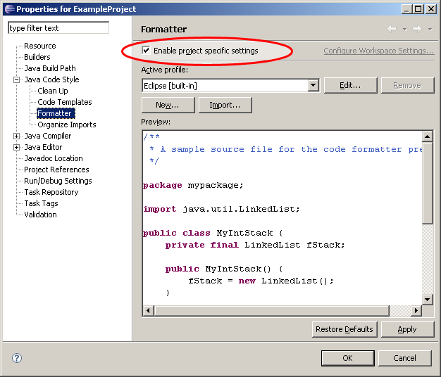
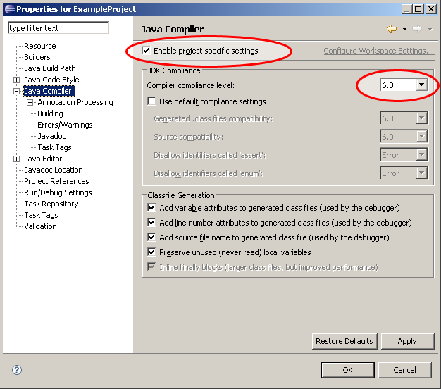

This section will explain how you can start using External Code Formatter in your project. When the plugin has been enabled, it will transparently replace IDEA's built-in code formatter.
- You can reformat your code as before, by pressing Ctrl+Alt+L, or when committing files to VCS.
- If the external code formatter does not support a file type, or you try to reformat a selected text, the plugin will automatically fall back to using IDEA's built-in code formatter.
Help topics
Using the Eclipse code formatter
You will need to have Eclipse 3.2 or later installed to use the Eclipse code formatter from within IDEA. The Eclipse code formatter supports formatting only Java source code files. When reformatting code with it, Eclipse's startup banner will show up momentarily.
In External Code Formatter's project settings, choose the Use the Eclipse code formatter option and configure the following fields:
- Eclipse executable
- Point this to the install location of Eclipse 3.2 or later.

On Windows, it is better to select eclipsec.exe instead of eclipse.exe, because the latter one would pop up a black command prompt dialog during reformatting.
- Eclipse preferences
- The location of an Eclipse project's org.eclipse.jdt.core.prefs file which contains the formatter settings. You will need to enable project specific formatter settings in Eclipse to get this file. See the following section for instructions on how to get this preferences file.
Getting the Eclipse code formatter preferences file
- With your project open in Eclipse's workspace, right-click the project and choose Properties.
- Go to Java Code Style | Formatter
and select Enable project specific settings.

- Also in the project properties, go to Java Compiler and
select Enable project specific settings. Make
sure that the Compiler compliance level is set right.

- Click OK to save the settings.
- Go to the .settings directory inside your project's directory. There you will find the org.eclipse.jdt.core.prefs file which contains the Eclipse formatter settings.
Using a custom code formatter
You can use any code formatter which can be executed on the command line. Refer to the instructions of your code formatter to find out the right command line parameters. It is possible to configure more than one command, which will help External Code Formatter to reformat all files with as few formatter executions as possible.
In External Code Formatter's project settings, choose the Use a custom code formatter option and configure the following fields:
- Supported file types
- A space separated list of file types which the code formatter should reformat. The wild card * is supported. To reformat all files, enter *.*. To reformat for example only Java and HTML files, enter *.java *.html *.htm.
- Command for reformat one file
- A command which can be executed to reformat one file at a time. Even if no other commands are specified, it is possible to let all the code reformatting to be done with this one command, but it might be unduly slow. This command should contain the tag %FILE% which will be replaced with the full path of the file being reformatted.
- Command for reformat many files
- A command which can be executed to reformat a list of files. This command has the best performance and all code formatting can be done just with this command. If this command is specified, then there is no need to specify the other commands. This command should contain the tag %FILES% which will be replaced with a space separated list of the full paths of the files being reformatted.
- Command for reformat directory
- A command which can be executed to reformat all supported files in a directory. Does not advance into subdirectories. This command should contain the tag %DIRECTORY% which will be replaced with the full path of the directory whose files are being reformatted.
- Command for reformat recursively
- A command which can be executed to reformat all supported files in a directory tree. Advances recursively into all subdirectories. This command should contain the tag %DIRECTORY% which will be replaced with the full path of the parent directory whose files and subdirectories are being reformatted.
| |
If you have problems in getting a code formatter to work, you might want to see any messages
which the code formatter prints when it is executed. To see them, start IDEA on the command line
using idea.bat (instead of idea.exe). You can also do some debugging with
|